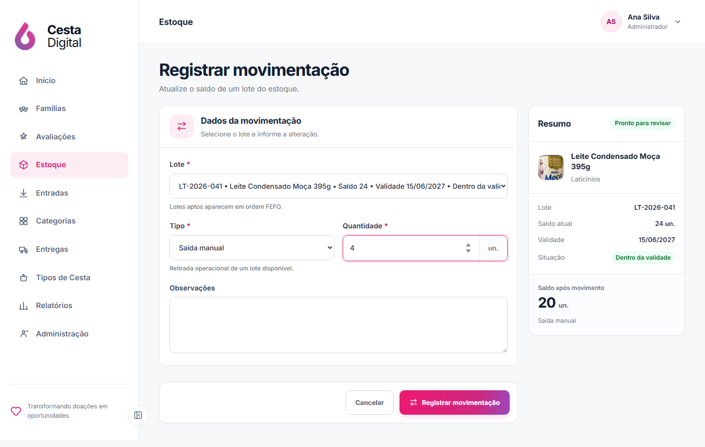
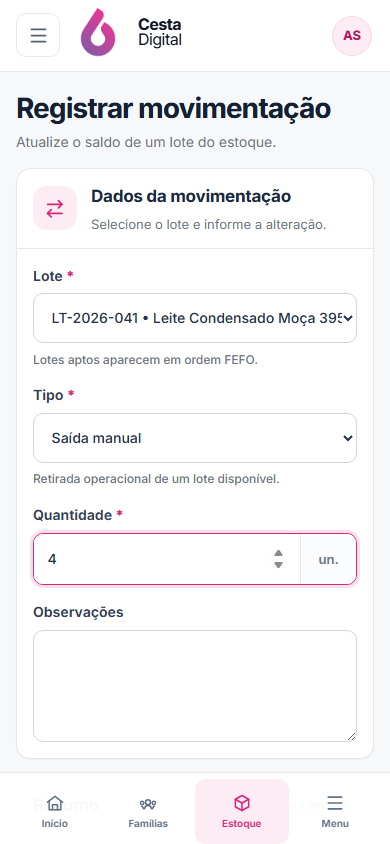
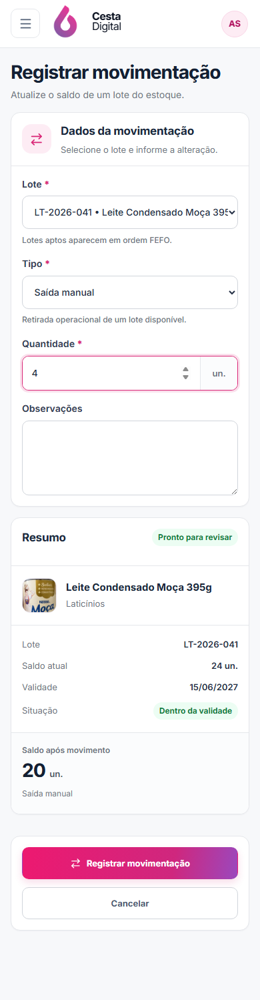

V2-16 · Movimentação de estoque
Comparação entre a direção aprovada do Estoque e o fluxo real de saída, perda e ajuste.
Aguardando aprovação visualReferência × implementação
Clique em qualquer imagem para abrir a captura original em uma nova aba.


Fluxo mobile
A primeira captura representa o viewport real; a segunda apresenta o fluxo completo sem repetir a navegação fixa.


Contratos preservados
Mesma rota, RBAC, endpoints, payload e retorno ao produto.
Operação segura
FEFO, validade, quarentena, item inativo e limites de saldo continuam ativos.
Leitura antes de salvar
O painel confirma produto, lote, validade e saldo projetado sem criar dados novos.